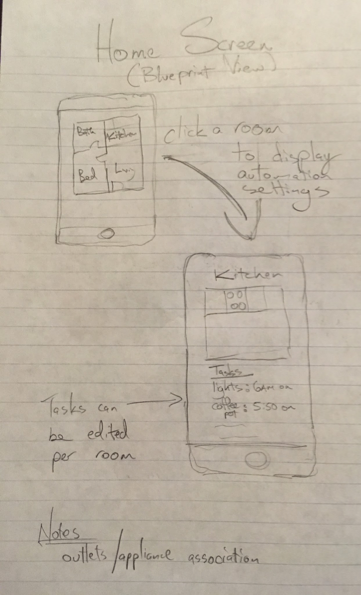
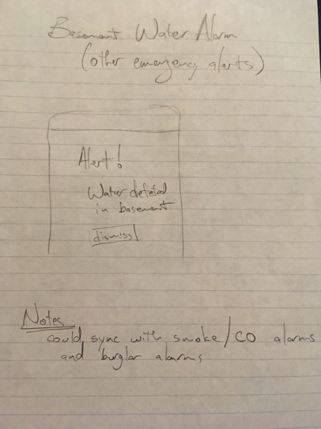

Below are the 22 home automation designs we had originally brainstormed, but deemed not right for a low-fidelity prototype. This decision was made with following justifications:
| Lights On/off for whole house and room. The idea here is to group each light by room, which allows whole rooms to be turned on/off at once. However, individual lights can be added to a grouping (burglar deterrent one light on in each room). Why not selected?: This was similar to the fan control design that was one of the 3 chosen. | |
|  | Home screen, blueprint view. Home screen will show all the home automation for a home, with respect to where it is in the house. Why not selected?: The blueprint view was covered in the fan prototype. |
| Home screen, list view. Home screen will show all of the home automation tasks that have been configured. Not right for prototype as more of a summary view than specific design. Why not selected?: The list view is effectively a sub-feature in the other, chosen designs. | |
| Security device authorization. Ensures that devices cannot be added or removed without authorization, also prevents any unwanted changes to automated activities. (Change the alarm from 6:30 am to 4:30 am!) Why not selected?: This design idea offered little user interaction beyond physically connecting devices. | |
| TV usage. Monitors what you are watching on which subscription service. Makes sure you are not wasting money on unused services! Why not selected?: This overlapped thematically with the energy usage prototype which made the final 3. | |
| Auto laundry/bathroom fan. Automatically turns on laundry room fan when dryer is running, and bathroom fan when shower is running. Why not selected?: This was similar to the fan control design that was one of the 3 chosen. | |
| Mail Notification. Receive a digital notification when physical mail is delivered. Why not selected?: This design idea offered little user interaction. | |
| Water savings. Integrates sprinkler system with weather reports, to ensure you don’t waste water on days it will rain. Why not selected?: Timing feature covered in routine editor prototype. | |
|  | Basement Water Alarm. Receive a notification if water is present in the basement. Targeted towards homeowners with those pesky leaky basements! Why not selected?: This design idea offered little user interaction. |
| Midnight snack lighting. Automatically turn on night lights and set the brightness level to an eye friendly level for the midnight trips to the fridge. Why not selected?: Timing feature covered in routine editor prototype. | |
| Music/ sound in occupied rooms. Why not selected?: This design idea offered little user interaction. | |
| Movie/TV lights. Integrate lighting with ‘play’ and ‘pause’. Avoid using your phone as flashlight once the movie has ended. Why not selected?: This would be difficult to prototype without the visceral feedback of actual lighting changes. | |
| Trash day. Don’t sit awake in bed wondering if you brought the trash out to the street or forgot! Why not selected?: This design idea offered little user interaction. | |
| Window weather. Receive notifications if you left windows open with a storm approaching in the forecast. Why not selected?: This design idea offered little user interaction. | |
| Window weather 2. Receive a notification if the temperature outside drops below the temperature inside, to turn off the air and enjoy the weather! Why not selected?: This design idea offered little user interaction. | |
| Lock doors. Doors lock automatically if your smartphone has left the house but the doors were left unlocked. Why not selected?: This design idea offered little user interaction. | |
| Moisture sensors/ air quality. Receive reports of any moisture or changes in air quality in the house. Why not selected?: This design idea offered little user interaction. | |
| Proximity sensors. Receive notifications when family members are arriving home. Are the kids going to make curfew? Why not selected?: Blueprint view covered in one of the final 3 prototypes. | |
| Window curtains, blueprint view. Control which window curtains are open or closed. Use independently or integrate within other home automation tasks, such as energy savings. Why not selected?: Blueprint view covered in one of the final 3 prototypes. | |
| Usage analytics to produce reports or insights based on consumed telemetry from managed devices part of the home automation network. Use independently or integrate within other home automation tasks, such as energy savings. | |
| List view of managed devices in home automation network. Control which sensors report on or off state. Functionality can be used to determine the state of an appliance. Use independently or integrate within other home automation tasks, such as energy savings. | |
| Home blueprint view. Control which sensors report open or closed state. Functionality can be used to determine the state of an entry point. Use independently or integrate within other home automation tasks, such as energy savings. |